Network rule
Never install or provision the laptop on the corporate network. Use a free Wi-Fi network or an approved guest Wi-Fi during provisioning.
Enterprise technician procedure
A practical English guide for creating a Windows 11 Autopilot installation USB, pre-provisioning a laptop, validating the user setup, and handling older devices that require a hardware hash import.
Never install or provision the laptop on the corporate network. Use a free Wi-Fi network or an approved guest Wi-Fi during provisioning.
Before connecting the user's account, confirm that the user is in the required Autopilot user groups defined by your organization.
When the device and user setup are complete, remove the computer account from the temporary corporate Wi-Fi exclusion group in Intune.
This procedure is intended for technicians preparing organization-managed laptops with a Windows 11 Autopilot ISO. It covers the original DISM-based workflow, the installation screens, the Autopilot pre-provisioning flow, and the supporting technician USB scripts used to collect hardware hashes and run diagnostics.
The expected end state is a Windows 11 laptop that has completed Autopilot pre-provisioning, has been resealed, and is ready for the assigned user to sign in with MFA.
oscdimg,
WinPE media creation, or other deployment tooling:
ADK installation guide.
Before connecting the user's account during OOBE, verify in Azure that the user is a member of both required groups. Replace the placeholders below with the approved internal group names for your tenant:
<Autopilot all-users group><Regional Autopilot users group>Azure portal: https://portal.azure.com
Intune admin center: https://intune.microsoft.com
Engineers can manually build the image using DISM. The examples below follow the same working-folder convention used by mariusdambu/Lab_Win11. The example driver folder uses a Lenovo T14, but the same pattern applies to other supported models.
Download the ZIP from the official GitHub repository and extract it to a local
folder, for example C:\Lab_Win11. Use the Trabajo folder
structure for all deployment payload exactly like this:
C:\Lab_Win11
C:\Lab_Win11\Trabajo\ISOs - Windows ISO files
C:\Lab_Win11\Trabajo\images - boot.wim, install.wim, install.esd or install*.swm
C:\Lab_Win11\Trabajo\Drivers - extracted INF drivers
C:\Lab_Win11\Trabajo\packages - CAB/MSU packagesC:\Lab_Win11\Trabajo\offline and keep it empty before mounting.
dism /Get-WimInfo /WimFile:"C:\Lab_Win11\Trabajo\images\install.wim"
dism /Mount-Image /ImageFile:"C:\Lab_Win11\Trabajo\images\install.wim" /Index:6 /MountDir:"C:\Lab_Win11\Trabajo\offline" /CheckIntegrity/Get-WimInfo before mounting.
The technician is responsible for identifying the exact laptop model, finding the correct official driver pack, downloading it, and using it for the image. Use the vendor's official support site, for example Lenovo Support for Lenovo models, Dell Support for Dell models, HP Support for HP models, and so on.
Place the downloaded model-specific drivers in a folder, for example:
C:\Lab_Win11\Trabajo\Drivers\T14Inject the drivers into the mounted image:
dism /Image:"C:\Lab_Win11\Trabajo\offline" /Add-Driver /Driver:"C:\Lab_Win11\Trabajo\Drivers\T14" /Recurse
If approved CAB or MSU packages are required, place them under
C:\Lab_Win11\Trabajo\packages and add them from there.
dism /Image:"C:\Lab_Win11\Trabajo\offline" /Add-Package /PackagePath:"C:\Lab_Win11\Trabajo\packages"dism /Unmount-Image /MountDir:"C:\Lab_Win11\Trabajo\offline" /Commit /CheckIntegrity
If you need to generate a new ISO file, use oscdimg. This tool is part of
the Windows ADK Deployment Tools. In the Lab_Win11 workflow, keep the base Windows
ISO in Trabajo\ISOs, keep customized boot.wim and
install.* files in Trabajo\images, and save the generated
ISO back to Trabajo\ISOs.
Trabajo\ISOs, uses custom images from
Trabajo\images, prepares the temporary media internally, and writes the
final ISO to Trabajo\ISOs.
Create a bootable USB with Rufus, selecting the modified Windows files or ISO. If preparing the disk manually, use PowerShell and confirm the disk number first.
Get-Disk
pause
Clear-Disk -Number 5 -RemoveData -RemoveOEM
Set-Disk -Number 5 -PartitionStyle GPT
New-Partition -DiskNumber 5 -Size 2048MB -AssignDriveLetter | Format-Volume -FileSystem FAT32
New-Partition -DiskNumber 5 -UseMaximumSize -AssignDriveLetter | Format-Volume -FileSystem exFAT
pauseUse two partitions. The first partition is only the UEFI boot starter. The second partition contains the full Windows setup content. Microsoft documents FAT32 as the default WinPE/UEFI boot format and calls out the 4 GB FAT32 file-size limit for Windows images; this guide keeps the boot partition FAT32 and uses exFAT for the larger data partition so technicians can copy files easily from Windows or macOS.
Microsoft references: Create bootable Windows PE media and Use a multi-partition USB deployment drive.
sources folder to the FAT32 partition.
The FAT32 partition should only contain sources\boot.wim. Put the full
sources folder, including the large Windows image file, on the exFAT
partition.
| Partition | Purpose | Copy exactly this content |
|---|---|---|
| FAT32 | Boot partition. This is what the laptop firmware starts from. |
boot\efi\sources\boot.wim onlybootmgrbootmgr.efi
|
| exFAT | Windows setup data partition. This holds the full installer and large image files. |
boot\efi\sources\ full foldersupport\autorun.infbootmgrbootmgr.efisetup.exe
|
clean, the workbench wipe option,
or the Windows Setup delete partitions option.
clean or Clear-Disk. These actions destroy data.
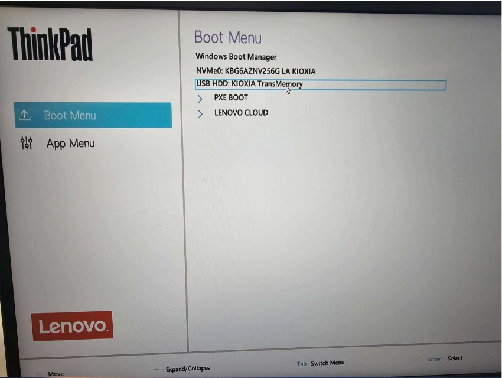
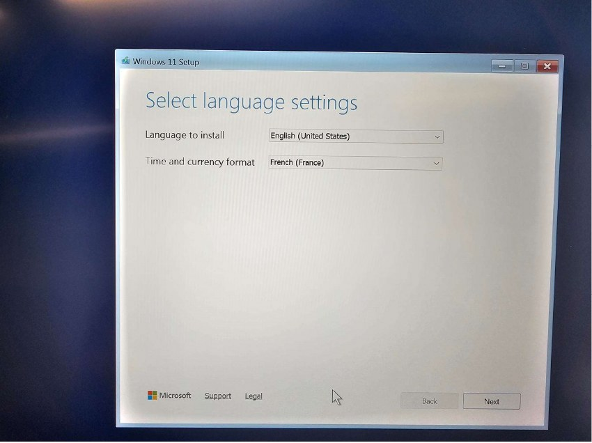
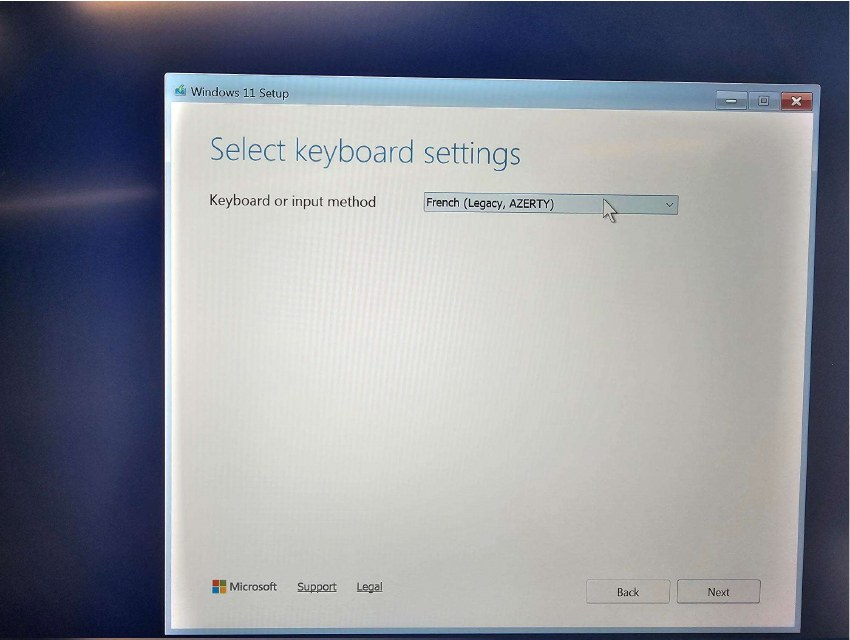
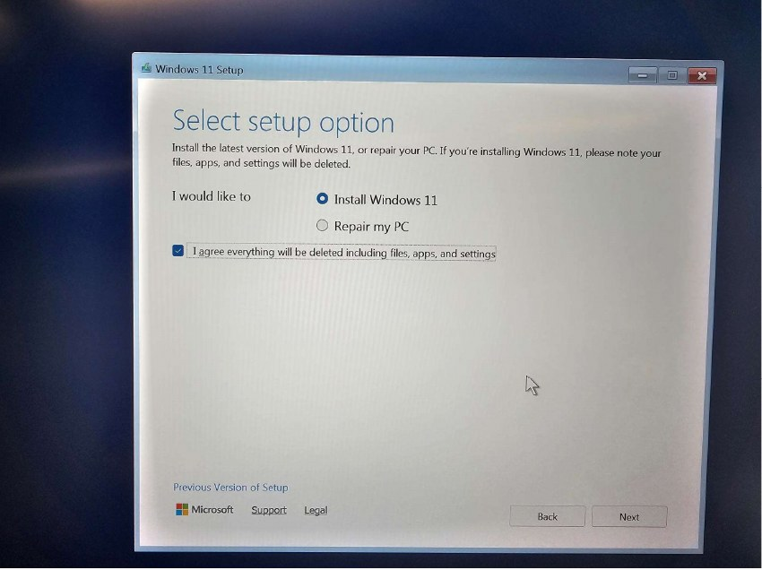
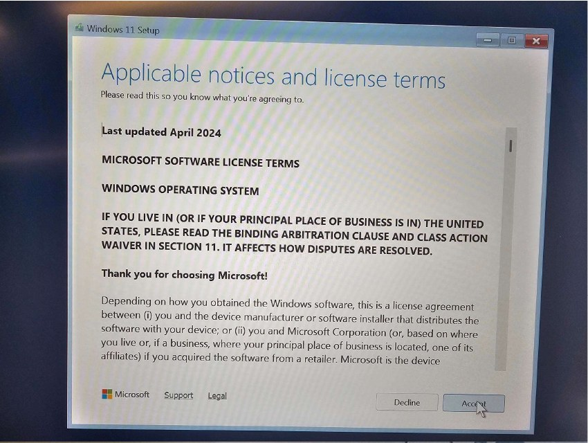
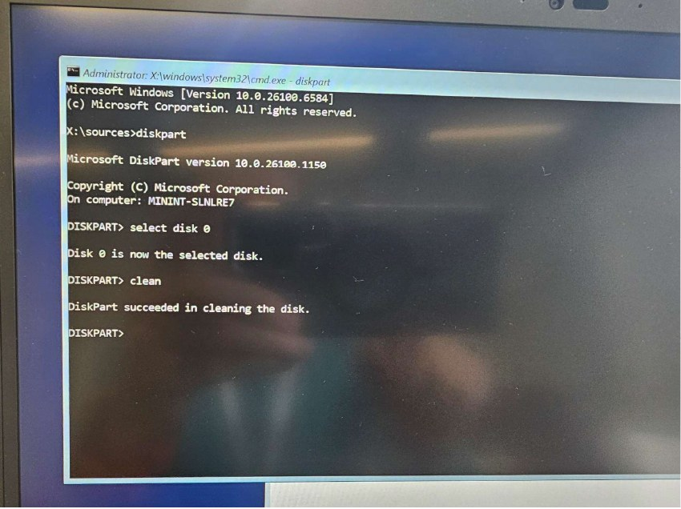
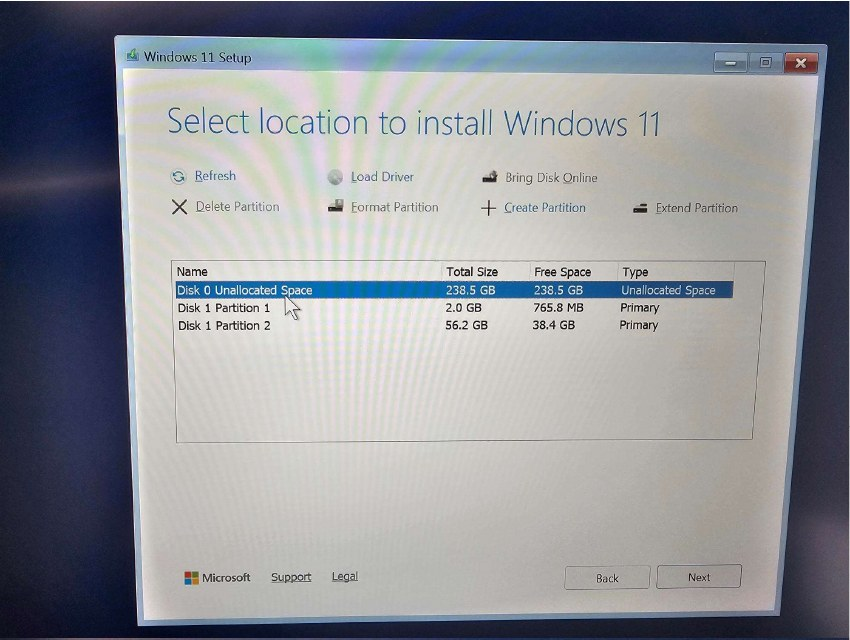
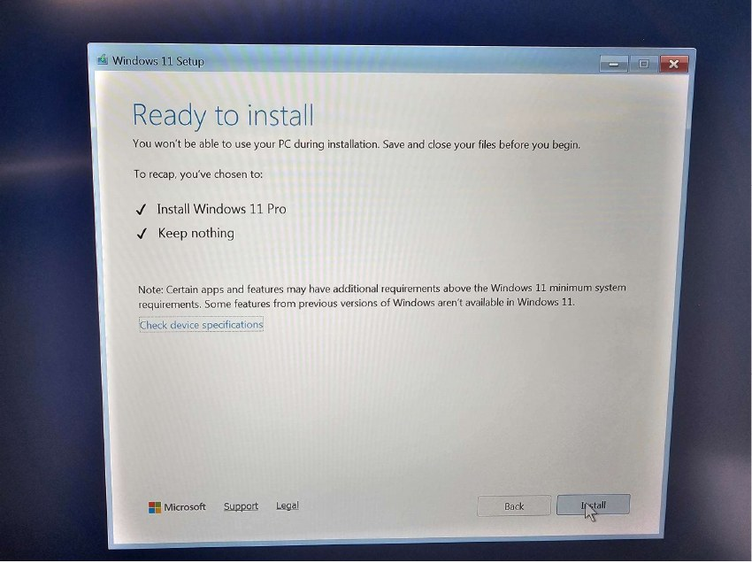
Shift + F10. On laptops where the function row requires the Fn modifier,
press Fn + Shift + F10.
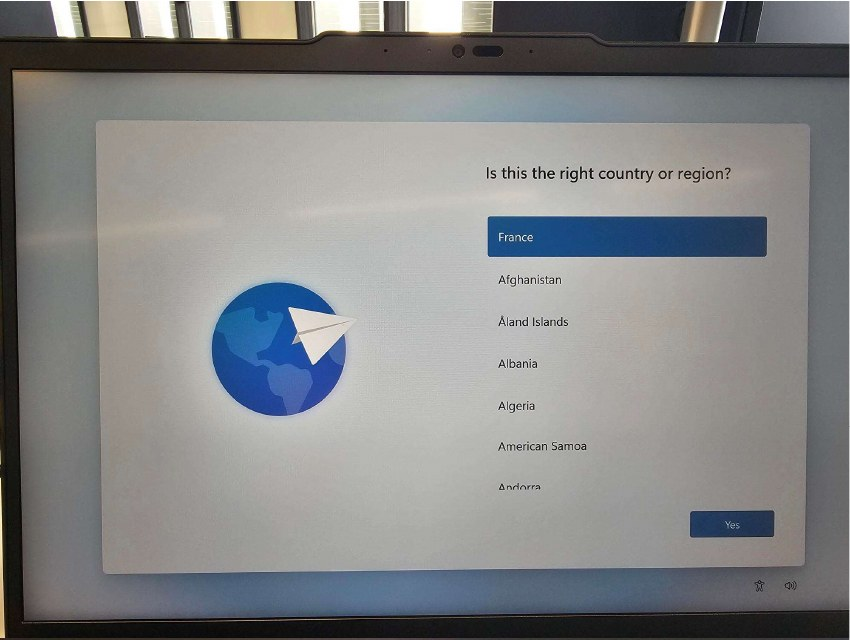
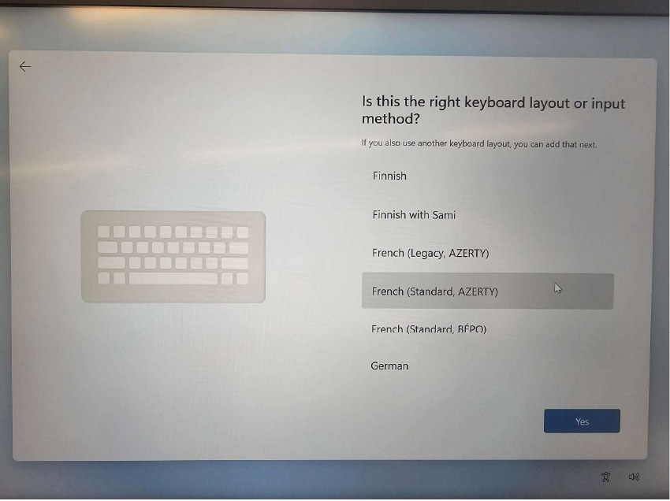
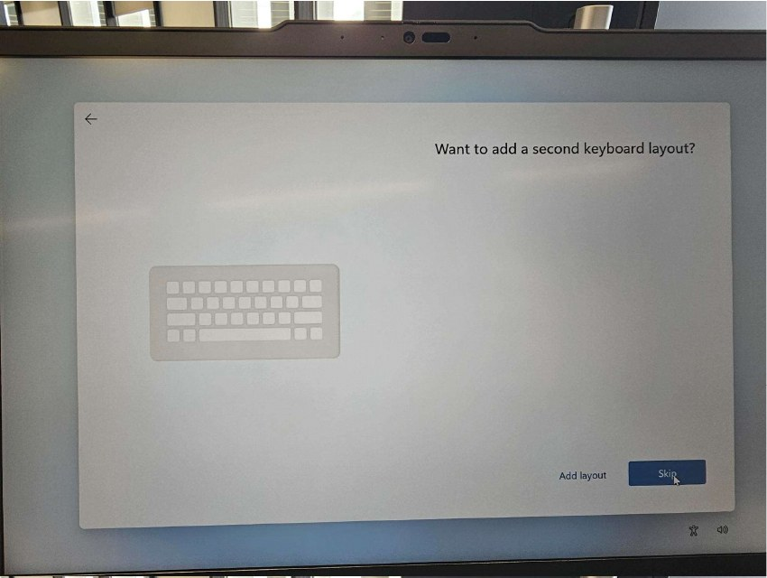
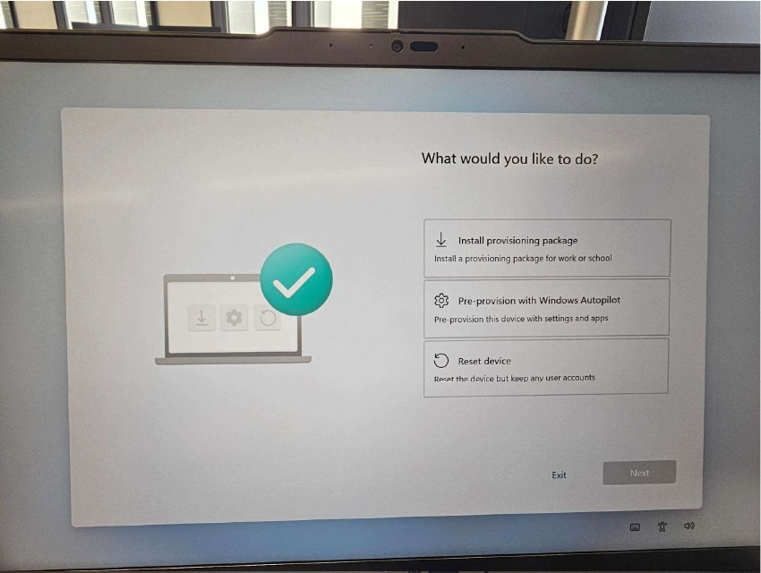
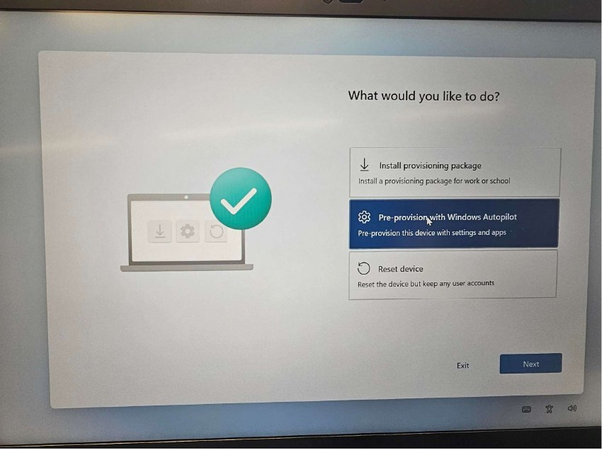
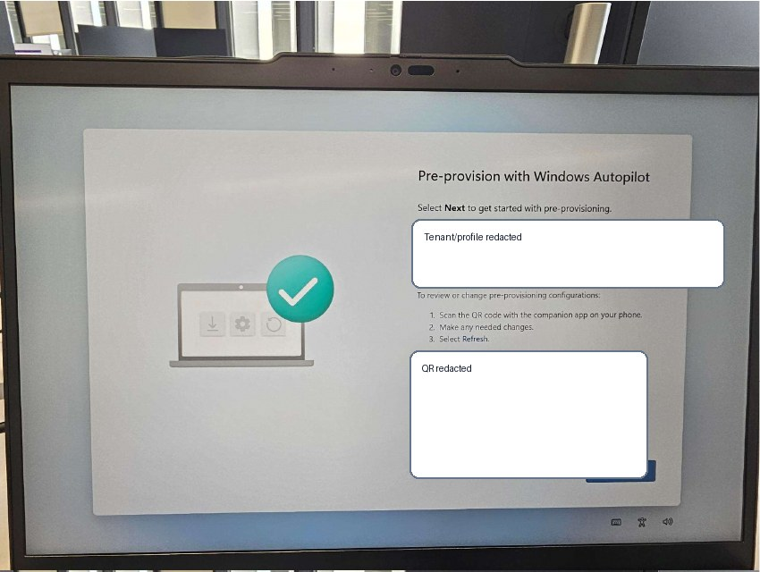
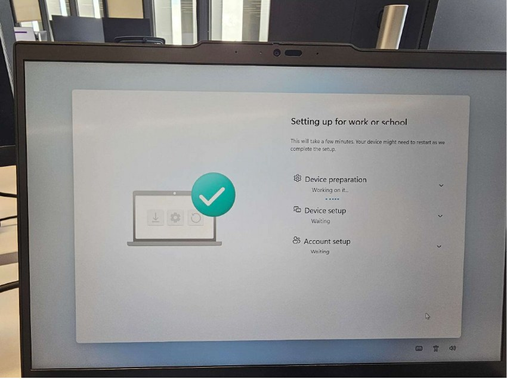
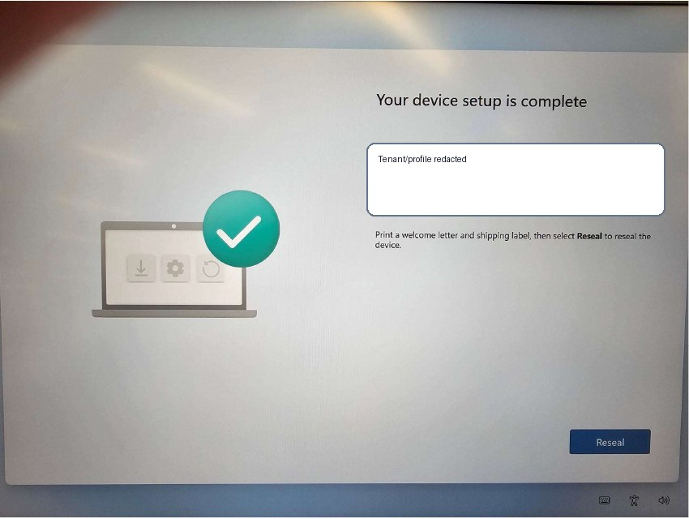
After the user signs in and MFA is complete, validate the laptop before handing it over.
<Temporary corporate Wi-Fi exclusion group>.If you do not have permissions, ask the approved endpoint engineering support channel for help.
Some older laptops are not enrolled in Autopilot by default. Before requesting enrollment, collect the device hardware hash and upload the CSV file to the required location.
AUTOPILOTUSB. The script searches
for this label; if it is wrong, the CSV will not be copied back to the USB correctly.
Run-HWID.cmd or option 4 from safeworkbench-en.cmd.C:\HWID, installs/runs Get-WindowsAutopilotInfo, and exports a CSV.HardwareIDs\<Serial>-HWID.csv on the USB.<approved internal Autopilot HWID upload path>.scripts\Get-WindowsAutoPilotInfo.ps1 workflow uses PowerShell Gallery
and therefore needs internet access. The GetAutoPilot\GetAutoPilot.CMD
helper uses a local script and is designed for offline CSV export to its own folder.
This project includes the technician USB tools under
tools\technician-usb. Copy the contents of that folder to the root of the
technician USB and keep the folder structure exactly as provided.
tools\technician-usb to the root of the USB.scripts and GetAutoPilot folders next to the CMD files.HardwareIDs at the root of the USB.AUTOPILOTUSB before running HWID capture.safeworkbench-en.cmd as the preferred menu.safeworkbench-en.cmd unless you have a specific reason not to; it requires
typing ERASE before the wipe runs.
| File | Purpose | Notes |
|---|---|---|
safeworkbench-en.cmd |
Recommended technician menu. | English UI. Use this first. Adds a shutdown/restart delay and requires typing ERASE before wiping Disk 0. |
workbench-en.cmd |
Standard technician menu. | English UI. Option 3 wipes Disk 0 through clean_disk0.txt; use carefully. |
Run-HWID.cmd |
Runs the hardware hash capture script. | Calls scripts\Get-WindowsAutoPilotInfo.ps1. Requires the USB label AUTOPILOTUSB to copy the CSV back to HardwareIDs. |
Run-AutopilotDiagnostics.cmd |
Runs Autopilot diagnostics. | Calls scripts\Get-AutopilotDiagnosticsCommunity.ps1. |
GetAutoPilot\GetAutoPilot.CMD |
Additional second option for hardware hash export. | Custom helper. Saves CSV output to the folder where the helper is executed. Use it as an additional local/offline export method when you want a direct CSV export. |
tools\technician-usb to the root of the technician USB.
safeworkbench-en.cmd, scripts\, GetAutoPilot\, and HardwareIDs\.AUTOPILOTUSB.safeworkbench-en.cmd.HardwareIDs\<Serial>-HWID.csv on the USB.tools\technician-usb to the root of the technician USB.
GetAutoPilot folder at the USB root.GetAutoPilot folder on the technician USB.GetAutoPilot.CMD.Get-WindowsAutoPilotInfo.ps1 script.GetAutoPilot folder.tools\technician-usb
safeworkbench-en.cmd
workbench-en.cmd
Run-HWID.cmd
Run-AutopilotDiagnostics.cmd
clean_disk0.txt
scripts\
Get-WindowsAutoPilotInfo.ps1
Get-AutopilotDiagnosticsCommunity.ps1
read_me.txt
GetAutoPilot\
GetAutoPilot.CMD
Get-WindowsAutoPilotInfo.ps1